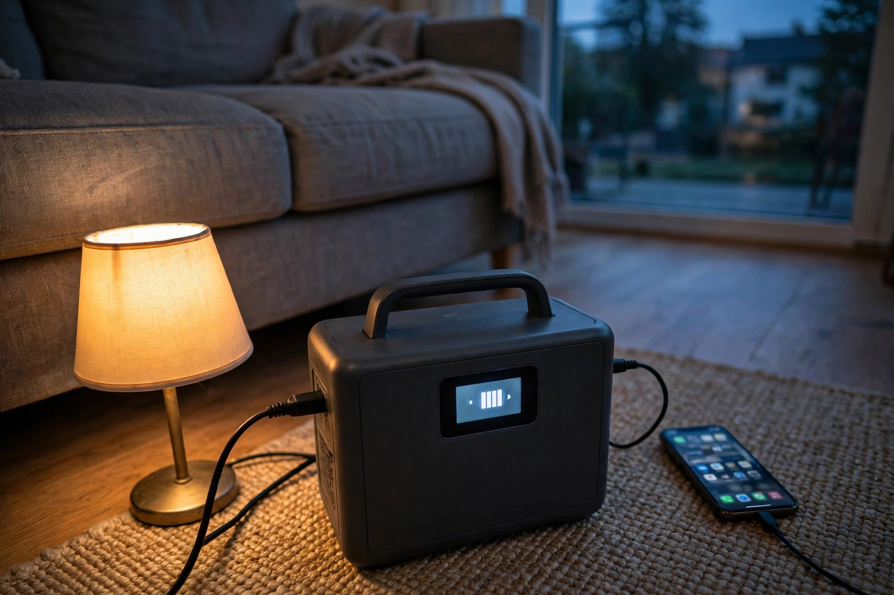
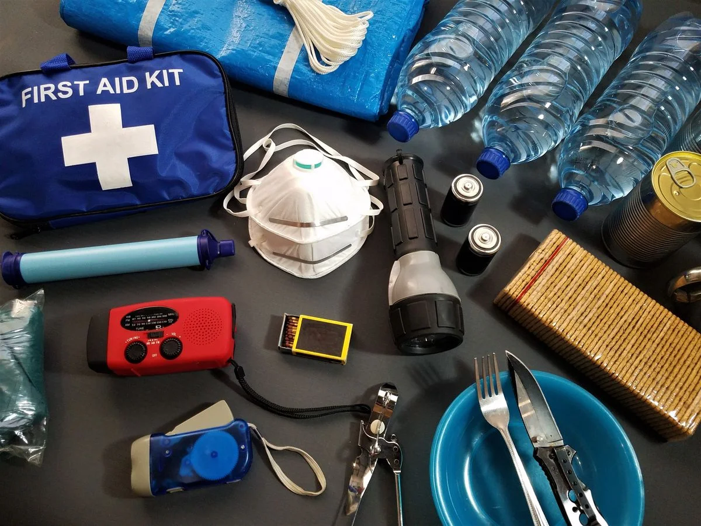

Best Dual-Fuel Inverter Generators for Home Backup: Westinghouse, Generac and Champion Compared
Which dual-fuel inverter generator should I buy?
Four dual-fuel inverters cover the home-backup class: the Westinghouse iGen5000DF, the Generac iQ5200DF, and Champion's enclosed and open-frame 4500W models. All four run on gasoline or propane, all make clean inverter power that is safe for electronics, and all are 120V essentials machines — fridge, lights, furnace blower — not whole-house power. They differ on running watts, runtime, noise and safety gear: the Westinghouse is the quietest with the longest propane runtime, the Generac has the biggest starting surge and GFCI outlets, and the Champions trade noise for runtime and weight.
Our pick: Westinghouse iGen5000DF — the most running watts of the four on both fuels (3,900W on gasoline, 3,500W on propane), the quietest published noise figure here at 52 dBA, the longest propane runtime at up to 22 hours at 25% load, and remote start, so nobody has to go out in the storm to fire it up.
Check price on AmazonAffiliate link to be added after approval. No price shown here — check it on Amazon.
At a glance
| Product | Best for | Check price |
|---|---|---|
| Westinghouse iGen5000DF | Quietest, most running watts, longest propane runtime | Link pending |
| Generac iQ5200DF | Biggest starting surge, GFCI outlets, CO shutoff | Link pending |
| Champion 4500W Dual Fuel Inverter (201319) | Enclosed and quiet-ish, with CO Shield | Link pending |
| Champion 4500W Dual Fuel Open Frame Inverter (201321) | Longest gasoline runtime, lightest of the four | Link pending |

We may earn a commission if you buy through links on this page. As an Amazon Associate I earn from qualifying purchases.
What you need
The four dual-fuel inverter generators in the 4,500–5,200 starting-watt class from the three makers whose spec pages we could verify line by line. Dual fuel is the angle that matters for home backup: propane stores for years without going stale and a standard 20-lb grill tank runs any of these for most of a day at light load, while gasoline makes roughly 10% more watts when you need them. Every model here is an inverter, so the power is clean (under 3% THD on all four) and safe for laptops, TVs and furnace electronics. No prices here on purpose — check the price on Amazon, and check stock before storm season, not during it.
Westinghouse iGen5000DF
The strongest all-round spec sheet of the four, from Westinghouse's own page: 5,000 starting / 3,900 running watts on gasoline and 4,500 / 3,500 on propane from a 224cc engine. Runtime is up to 18 hours at 25% load on its 3.4-gallon gas tank and up to 22 hours at 25% load on a 20-lb propane tank — the longest propane figure here. At 52 dBA it is the quietest published rating of the four, helped by its enclosed body and economy mode. Outlets are a 120V duplex (5-20R), an RV-ready TT-30R and two USB ports; starting is remote, push-button electric or recoil, and it is parallel capable. It weighs 104.7 lbs dry, on wheels with a telescoping handle.
Watch out: Westinghouse's own spec table lists the base iGen5000DF with NO carbon monoxide sensor — the CO-sensor version is the separate iGen5000DFc model, so check the exact model name before you buy, and run it outdoors at least 20 feet from the house either way. It is also 120V only, like all four here.
Check price on AmazonAffiliate link to be added after approval. No price shown here — check it on Amazon.
Generac iQ5200DF
The biggest starting surge of the four: 5,200 starting / 3,900 running watts on gasoline and 4,700 / 3,500 on propane from a 223cc engine, per Generac's own spec sheet. That surge headroom is what starts a fridge or a furnace blower without drama. Runtime at 25% load is 15 hours on its 3.2-gallon gas tank and 20 hours on a 20-lb propane tank (9 and 11 hours at 50% load). The control panel is the best equipped here: two GFCI household receptacles (5-20R), a 120V 30A L5-30R, USB-A and USB-C ports, an LED display, and Generac's COsense carbon monoxide auto-shutoff. Push-button electric start with recoil backup, parallel ready, 3-year residential warranty.
Watch out: The heaviest here at 111 lbs, and Generac does not publish a dBA noise rating for this model — the spec sheet says only that the fully enclosed case reduces noise, so if a quiet street matters, know that the number is Generac's to withhold, not ours to guess. Its 30A outlet is a twist-lock L5-30R, not the RV-style TT-30R the other three carry.
Check price on AmazonAffiliate link to be added after approval. No price shown here — check it on Amazon.
Champion 4500W Dual Fuel Inverter with CO Shield (201319)
Champion's enclosed model: 4,500 starting watts on both fuels, 3,500 running watts on gasoline and 3,150 on propane from a 212cc engine. Runtime is up to 14 hours at 25% load on its 2.25-gallon gas tank and up to 21 hours at 25% load on a 20-lb propane tank. Noise is 61 dBA from 23 feet — Champion likens it to normal speech. Outlets are an RV-ready TT-30R, a 120V duplex (5-20R) and a 12V automotive outlet with a USB adapter, all covered. It has Champion's CO Shield carbon monoxide auto-shutoff, electric start with recoil backup, an EZ Start dial for switching fuels, and it is parallel ready. Champion lists it at 99.2 lbs, with a fold-down handle and never-flat wheels.
Watch out: The smallest gas tank here (2.25 gallons) means the shortest gasoline runtime of the four — on gas alone it needs refuelling roughly twice as often as the open-frame Champion below. Its propane running watts (3,150W) are also the lowest here, so plan propane loads carefully.
Check price on AmazonAffiliate link to be added after approval. No price shown here — check it on Amazon.
Champion 4500W Dual Fuel Open Frame Inverter (201321)
The runtime pick. The open frame fits a 4.02-gallon tank — the biggest here — and Champion rates it at up to 22 hours at 25% load on gasoline, the longest gas runtime of the four, plus 21 hours at 25% load on a 20-lb propane tank. Output is 4,500 starting watts on both fuels, with 3,650 running watts on gasoline and 3,285 on propane from a 224cc engine — more running watts than the enclosed Champion on both fuels. Outlets are an RV-ready TT-30R, a 120V duplex (5-20R) and a 12V automotive outlet; it has CO Shield, push-button electric start, an Intelligauge with power meter, and ParaLINK parallel ports. At 92.6 lbs it is the lightest of the four.
Watch out: Open frame means loudest and least weather-protected: 64 dB(A), and the works are exposed to rain and dust in a way the three enclosed models are not. If it will live on a patio through storm season, the enclosed models age better.
Check price on AmazonAffiliate link to be added after approval. No price shown here — check it on Amazon.
How to pick
- Size on the propane number, not the gasoline number. Every dual-fuel generator makes less power on propane — here, 3,150–3,500 running watts instead of 3,500–3,900. If propane is your stored fuel (it should be — it never goes stale), add up your loads against the propane figure: fridge, furnace blower, a few lights, Wi-Fi and phone charging fit; a space heater or window AC eats most of the budget on its own.
- Decide runtime by tank, not by hope. At a light 25% load the four run 14–22 hours per fill. The open-frame Champion's 4.02-gallon tank is the only one that stretches gasoline past a full day; the enclosed Champion's 2.25-gallon tank needs a refill stop in that same stretch. On propane all four cluster around 20–22 hours per 20-lb tank — one spare tank is a full extra day.
- Treat noise as a night-time feature. 52 dBA (Westinghouse) and 64 dB(A) (open-frame Champion) are both "conversation-class" numbers on paper, but the gap is the difference between sleeping through the night and listening to the generator through it — and so will your neighbours. Where makers publish a figure, it is in the table below; Generac does not publish one for the iQ5200DF.
- Know the 120V ceiling before you buy. All four are 120V-only. No well pump, no central air, no electric dryer or range. If any of those are non-negotiable in an outage, this whole class is the wrong tool — you need a 240V generator or a standby unit, and it is better to learn that here than during a storm.
- Plan placement before features. Outdoors only, at least 20 feet from windows and doors, exhaust pointed away — that rule outranks every feature on this page. A CO auto-shutoff (fitted to three of the four) is a backup for bad placement, not a fix for it.

Photos still needed
No hands-on test photos exist yet for this guide. Still missing — needs real at-home photos of the actual models:
- Each generator set up outdoors at a safe distance, cable run visible
- Each control panel close up, outlets and fuel selector legible
- A 20-lb propane tank connected, hose routing shown
- Each generator beside a fridge for a true size sense
Comparison
| Specification | Westinghouse iGen5000DF | Generac iQ5200DF | Champion 201319 (enclosed) | Champion 201321 (open frame) |
|---|---|---|---|---|
| Starting watts (gas / propane) | 5,000 / 4,500 | 5,200 / 4,700 | 4,500 / 4,500 | 4,500 / 4,500 |
| Running watts (gas / propane) | 3,900 / 3,500 | 3,900 / 3,500 | 3,500 / 3,150 | 3,650 / 3,285 |
| Runtime at 25% load (gas / propane) | Up to 18 hrs (3.4 gal) / up to 22 hrs (20-lb tank) | 15 hrs (3.2 gal) / 20 hrs (20-lb tank) | Up to 14 hrs (2.25 gal) / up to 21 hrs (20-lb tank) | Up to 22 hrs (4.02 gal) / up to 21 hrs (20-lb tank) |
| Noise | 52 dBA | Not published by Generac | 61 dBA from 23 ft | 64 dB(A) |
| Weight | 104.7 lbs (dry) | 111 lbs | 99.2 lbs | 92.6 lbs |
| Outlets | 120V duplex 5-20R, TT-30R RV, 2 USB | 2× GFCI 5-20R, L5-30R 30A, USB-A, USB-C | TT-30R RV, 120V duplex 5-20R, 12V automotive | TT-30R RV, 120V duplex 5-20R, 12V automotive |
| CO auto-shutoff | No (the iGen5000DFc version adds one) | Yes — COsense | Yes — CO Shield | Yes — CO Shield |
| Start | Remote, electric, recoil | Electric, recoil | Electric, recoil | Electric |
| Power quality | Inverter, ≤3% THD | Inverter, <3% THD | Inverter, <3% THD | Inverter, <3% THD |
| Parallel capable | Yes | Yes (kit sold separately) | Yes (kit sold separately) | Yes — ParaLINK |
How we picked
These four are the current dual-fuel inverter models in the 4,500–5,200 starting-watt home-backup class from Westinghouse, Generac and Champion — the class buyers ask about for fridge-plus-essentials backup with a propane option. Every specification in this guide comes from the manufacturers' own product pages and spec sheets, listed in Sources below, checked 22 November 2026. Where a maker does not publish a figure — Generac's noise rating — the table says so instead of filling the gap.
| Products compared in this guide | Manufacturers | Hands-on tests run |
|---|---|---|
| 4 | 3 | 0 — none yet |
What we have not done yet: no product in this guide has been tested hands-on by us. When we test one at home, this box will say so, with the date.
Troubleshooting
It starts on gasoline but not on propane
Work the propane path in order: tank valve fully open, hose and regulator seated at both ends, and the fuel selector switched to propane before you crank — all three makers route fuel choice through a dial or panel switch, and a selector left on gasoline is the most common cause. A nearly empty 20-lb tank can also fail to feed under load in cold weather; swap the tank before you blame the machine.
It shuts down after a few minutes outside
Suspect the CO sensor doing its job. Wind can blow exhaust back toward the unit, or the generator may be closer to a window, soffit vent or corner than it looks. Move it farther out — at least 20 feet from the house — with the exhaust pointed away, and let the sensor reset before restarting. Repeated shutdowns in open air are a warranty call, not a sensor to defeat: never tape over or disable a CO shutoff.
The fridge or furnace blower will not start
Motors draw a starting burst well above their running watts. Check the load against the generator's starting watts on the fuel you are actually burning — the propane starting figure is lower on the Westinghouse and Generac. Start the big motor first with everything else off, then add loads one at a time, and switch economy mode off while motors are starting: Generac notes its economy switch trades starting watts for quiet.
It ran fine last season and will not start now
Stale gasoline is the usual story — gas left in a tank and carburettor over a season gums both. This is the practical argument for the dual-fuel class: try it on propane, which does not degrade in storage. If it starts on propane, drain the old gas, refill fresh with stabiliser, and store it on propane next time.
Frequently asked questions
Why buy a dual-fuel generator instead of gas-only?
Propane stores for years without going stale, so a dual-fuel machine can sit ready with a 20-lb tank beside it, and in a long outage you can switch fuels when one runs out. The trade-off is power: every model here makes fewer running watts on propane than on gasoline — 3,500W instead of 3,900W on the Westinghouse and Generac, for example — so size your loads on the propane number if propane is your planned fuel.
Can one of these run a whole house?
No. All four are 120V-only machines in the 3,150–3,900 running-watt range: a fridge, lights, phones, Wi-Fi, a TV and a furnace blower or a small window AC, run with some care. They cannot run 240V loads — a well pump, central air, an electric dryer or a range needs a bigger, 240V class of generator or a home standby unit.
Which is the quietest?
Of the published figures, the Westinghouse iGen5000DF at 52 dBA — well under the Champion enclosed model's 61 dBA from 23 feet and the Champion open frame's 64 dBA. Generac does not publish a dBA rating for the iQ5200DF; its spec sheet says only that the fully enclosed case reduces noise, so there is no honest number to compare for it.
Is a CO sensor enough to run one in a garage with the door open?
No. Three of the four models here have a CO auto-shutoff (Champion's CO Shield, Generac's COsense), and Champion and Generac both state it is not a substitute for safe operation. CDC and CPSC guidance is unchanged: generators run outdoors only, at least 20 feet from the house, exhaust pointed away from windows and doors. The sensor is a last-resort backup, not permission.
Sources
- Westinghouse — iGen5000DF Inverter Generator, Dual Fuel (product page and specifications): https://westinghouse.com/products/igen5000df-inverter-generator-dual-fuel
- Generac — iQ5200 Dual Fuel Portable Inverter Generator (product page): https://www.generac.com/residential-products/portable-generators/5200-dual-fuel-portable-generator-8947/
- Generac — iQ5200DF specification sheet A0006743922 Rev. B (running/starting watts, control panel, runtimes, weight): https://productmanuals.generac.com/api/manualfiles/G0089460/A0006743922/0
- Champion Power Equipment — 4500W Dual Fuel Open Frame Inverter, model 201321 (product page and specifications): https://www.championpowerequipment.com/product/201321-4500w-dual-fuel-open-frame-inverter/
- Champion Power Equipment — 4500W Dual Fuel Inverter with CO Shield, model 201319 (product page and official sell sheet, specifications and weight).
- CDC / CPSC — carbon monoxide and generator safety guidance: run generators outdoors only, at least 20 feet from the home, exhaust away from windows and doors.
Keep going
Best Mid-Size Power Stations Around 1,000Wh: EcoFlow, Jackery and Anker Compared
The silent half of the outage plan: the three roughly-1,000Wh stations our research scored highest, compared on output, recharge speed and weight.
Read the guide →Portable Power Stations for a 72-Hour Home Kit: What Actually Matters Before You Buy
What actually matters when buying a portable power station for a 72-hour home kit: size, recharge, and what must stay on.
Read the guide →
Prep & PowerSmall Power and Emergency Gear for a 72-Hour Kit
The small, cheap kit items that complete a 72-hour kit after the big power station: a power bank, two radios, a water filter and food.
Read the guide →